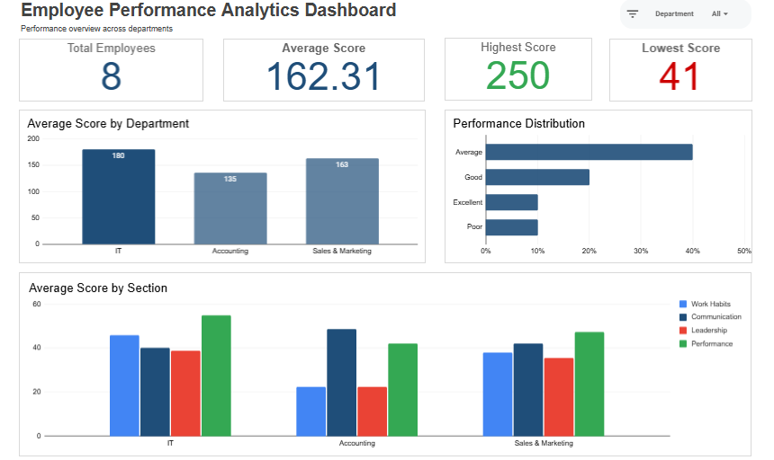
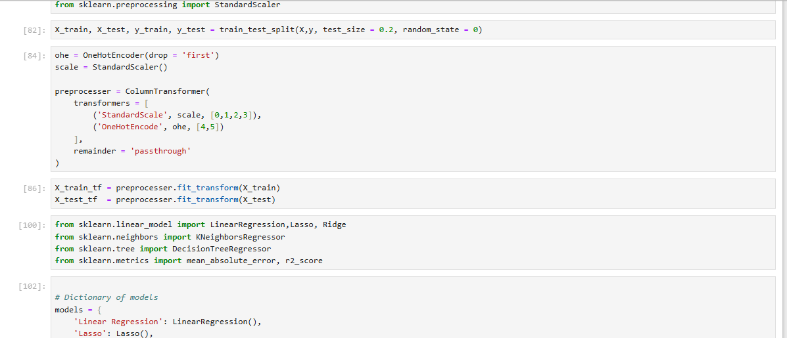
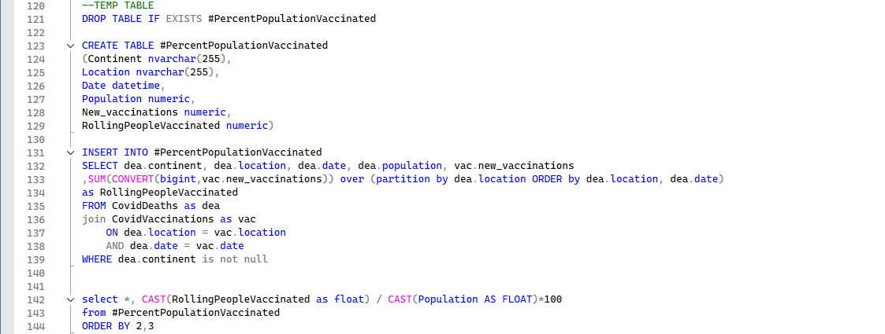
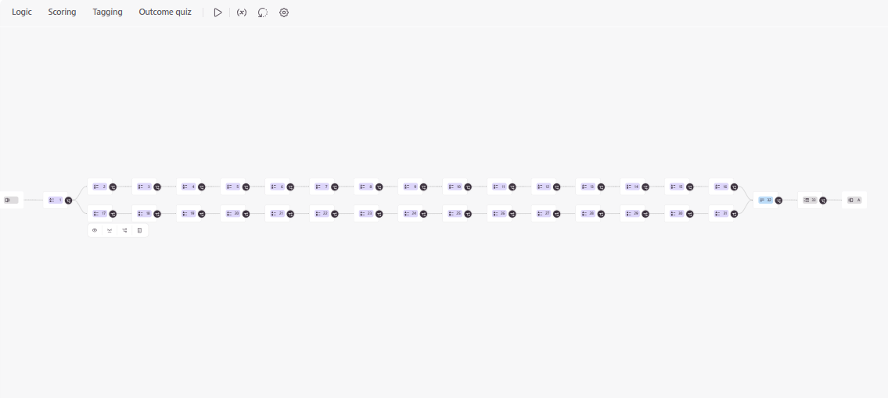
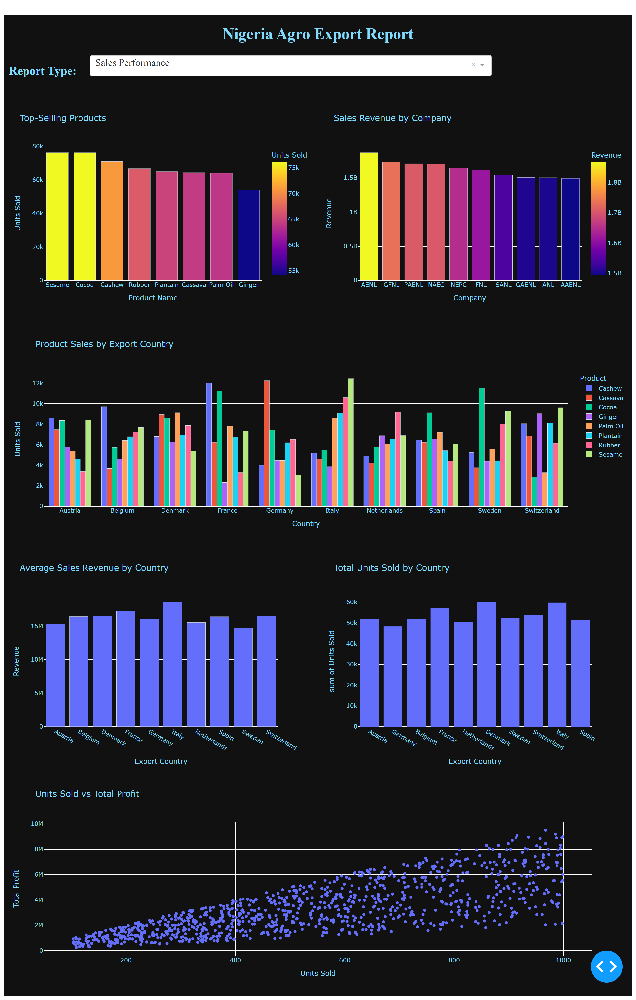
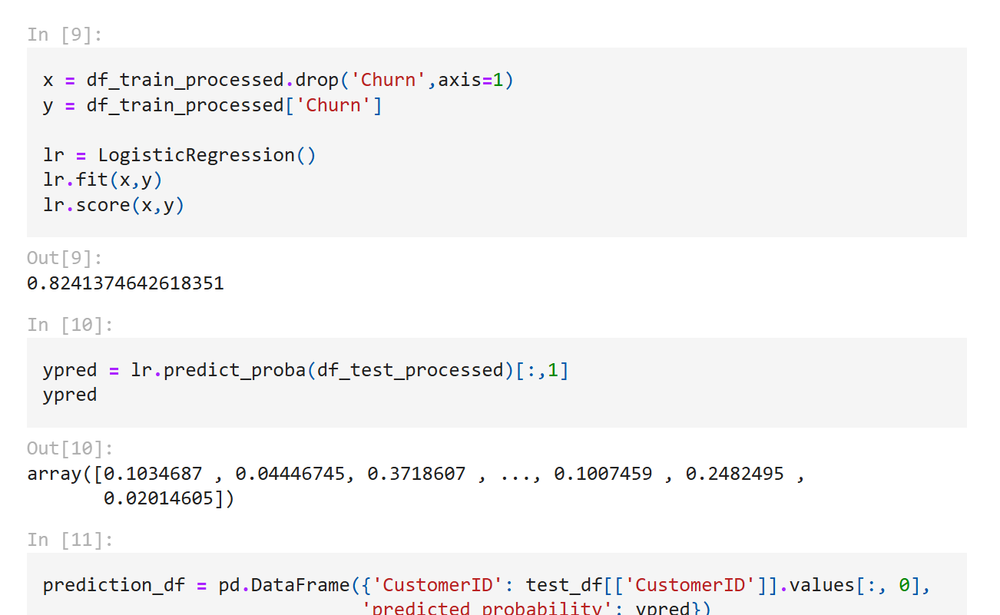
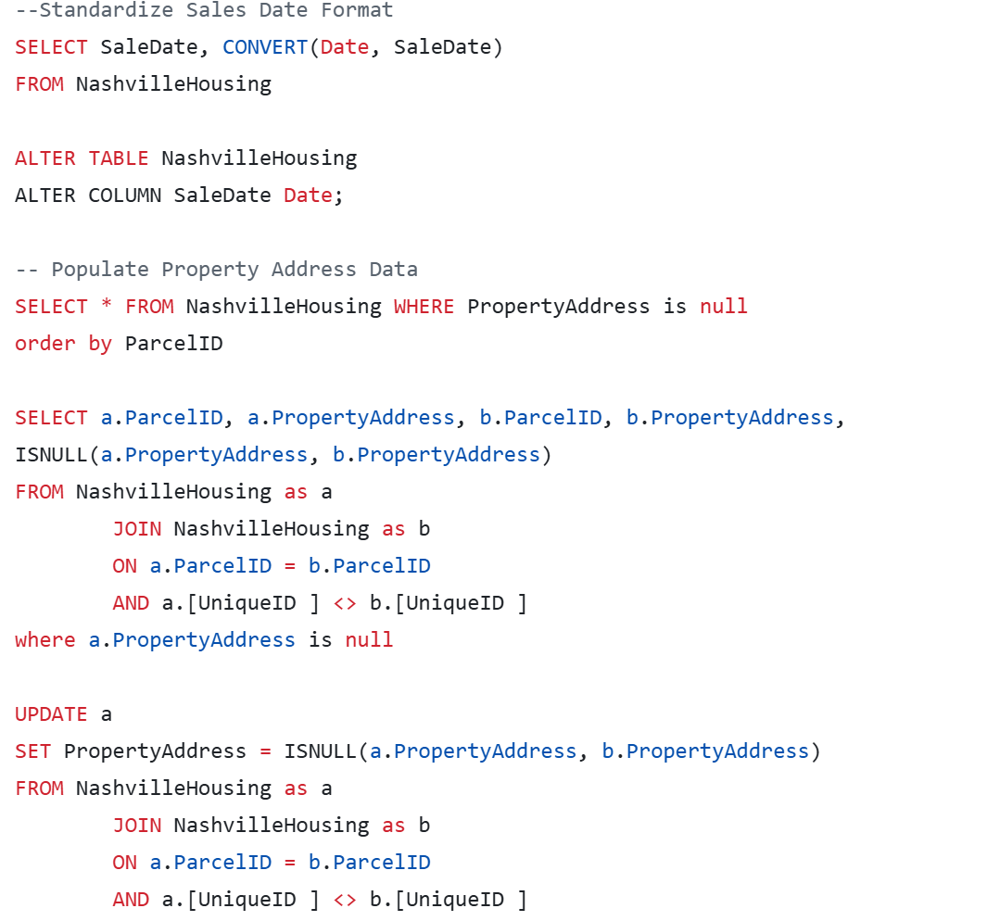
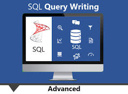
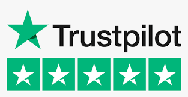

Hi, I am Agbetoye "Toyin" Oluwatoyin.
My interest in data comes from a simple idea: every business is generating valuable information, but most of it goes unused.
I enjoy digging into data, finding the stories hidden inside it, and turning those insights into something useful, whether that's an interactive dashboard, a predictive model, or an automated workflow that saves hours of manual work.
Over the years, I've worked on projects involving business intelligence, machine learning, reporting automation, customer analytics, and performance tracking.
I use tools like Python, SQL, Power BI, Excel, Google Sheets, Zapier, and Typeform to build solutions that don't just look good, but actually help people make better decisions and work more efficiently.
When I'm not building data solutions, I am exploring new ways to combine analytics and automation to solve everyday business challenges.
Tools & Skills Used:
Google Sheets, Google Forms, ARRAYFORMULA, IF/IFS,
Conditional Formatting, Zapier, Email Automation
Developed an employee performance analytics dashboard
to evaluate scores across departments and assessment
categories. Automated score calculations and performance
classification using ARRAYFORMULA and IF/IFS, applied
conditional formatting for four performance levels,
and created KPI cards and charts for comparative analysis.
Integrated Zapier to automatically email individual
assessment score breakdowns and performance remarks.

Tools & Skills Used:
Python, Scikit-learn, Exploratory Data Analysis,
Feature Engineering, Machine Learning

Developed a predictive model to estimate crop yields using
scikit-learn. Preprocessed data by handling missing values
and outliers, performed feature engineering and exploratory
data analysis, and tested K-Nearest Neighbors, Linear
Regression, Decision Trees, and Lasso Regression. Evaluated
model performance using Mean Absolute Error (MAE) and R².
Tools & Skills Used:
Google Sheets, Spreadsheet Formulas, Data Validation,
Financial Tracking, Dashboard Design

Built a centralized tracking system for a phone business
operating across four cities. Used formulas, lookup functions,
data validation, and conditional formatting to manage inventory,
sales, expenses, and profit. Created a dashboard for monthly
summaries and business performance tracking.
Tools & Skills Used:
SQL, Microsoft SQL Server, JOINs, Views,
Aggregation, Exploratory Data Analysis

Created and queried a relational database in Microsoft
SQL Server to explore COVID-19 data. Used JOINs, views,
and aggregation functions to organize data and examine
patterns in infection rates, case distribution, and
regional trends.
Tools & Skills Used:
Typeform, Zapier, Kit, Assessment Design,
Conditional Logic, Workflow Automation

Designed a Typeform assessment with Individual/Team
branching and scoring across five categories. Integrated
Zapier and Kit to deliver personalized diagnostic summaries
and automated emails containing category-level results
and remarks.
Assessment-Based Lead Qualification & Email Nurturing
Tools & Skills Used:
Google Forms, Google Sheets, Zapier, Kit, Calendly,
Response Scoring, Workflow Automation

Built a lead qualification workflow using Google Forms,
Sheets formulas, and Zapier to score responses and assign
one of four categories. Connected each category to a relevant
next step and configured Kit tags and personalized email
sequences for follow-up.
This case study presents completed client work using
screenshots. A public demonstration link is not available.
Tools & Skills Used:
Python, Pandas, Plotly Dash, Data Analysis,
Data Visualization

Developed an interactive dashboard using Python, Pandas,
and Plotly Dash to explore Nigerian agricultural export data,
visualize export trends, compare commodity performance,
and examine regional contributions.
Tools & Skills Used:
Python, Pandas, NumPy, Scikit-learn,
Machine Learning, Predictive Analytics

Developed a predictive model for subscriber retention as part
of the Coursera Data Science Challenge, achieving a ROC-AUC
score of 75%. Analyzed and visualized data patterns using
Python, achieving challenge performance better than 88%
of participants.
Tools & Skills Used:
SQL, Data Analysis, Data Cleaning, Trend Analysis
Used SQL queries to analyze emergency call data, examine
call volume and response patterns, and investigate trends
relevant to operational planning and public safety.
Tools & Skills Used:
SQL, Data Cleaning, Data Transformation,
Data Preparation

Cleaned and transformed housing data using SQL by
standardizing date formats, handling missing values,
removing duplicates, and improving data consistency
for analysis.
Tools & Skills Used:
SQL, Views, Stored Procedures, Analytical Queries

Created SQL queries, views, and stored procedures to
analyze employee salary, trade, and vendor datasets,
demonstrating advanced querying and reusable database
objects for reporting.
Tools & Skills Used:
Python, BeautifulSoup, Requests, Web Scraping,
Data Collection

Built a Python web-scraping workflow using Requests
and BeautifulSoup to collect Trustpilot customer reviews
and prepare the extracted data for further analysis.